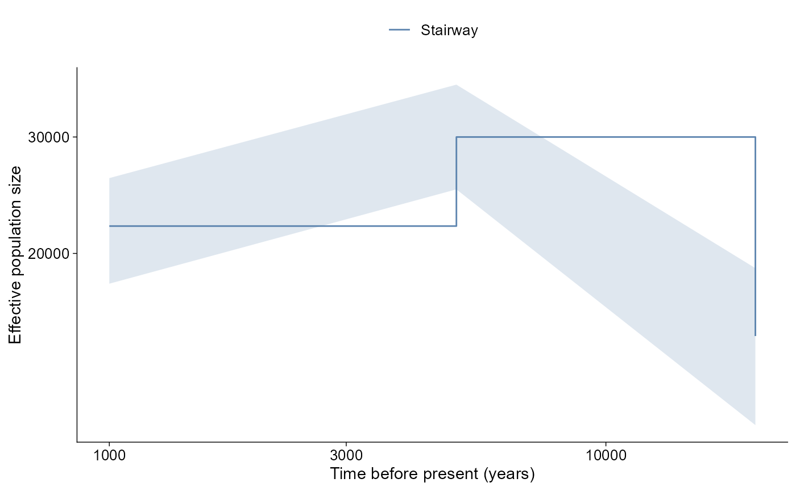
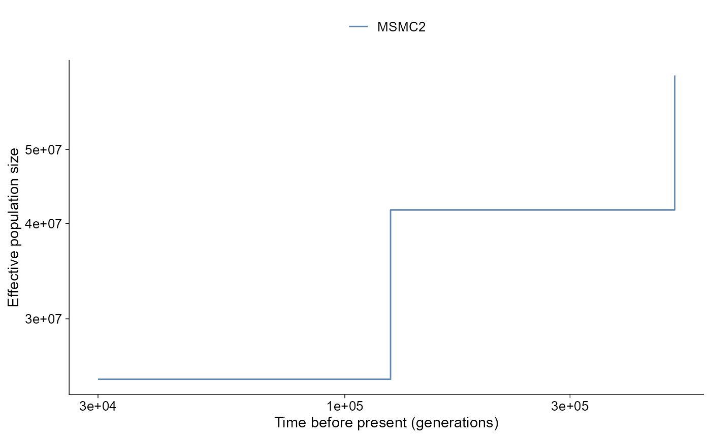
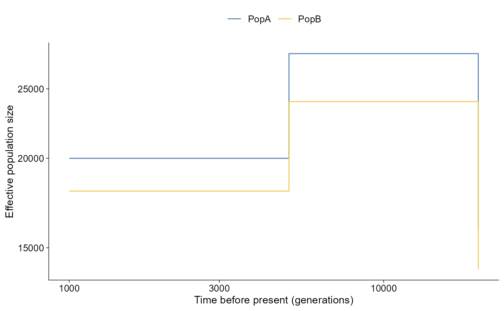

ggpop imports effective population size histories into a
typed ggpop_ne_history object. The module supports PSMC,
MSMC2, SMC++, and Stairway Plot 2 outputs.
Raw VCF and pop_group.txt metadata are upstream inputs
for these external demographic inference tools. ggPopi
reads their output tables; it does not estimate Ne histories directly
from VCF.
API summary
| Task | API | Notes |
|---|---|---|
| Import PSMC | import_ne_history(file, type = "psmc") |
Scaled by default; pass mutation_rate for absolute
values |
| Import MSMC2 | import_ne_history(file, type = "msmc2") |
Reads final output with time boundaries and lambda columns |
| Import SMC++ | import_ne_history(file, type = "smcpp") |
Reads smc++ plot --csv output
(label,x,y,plot_type,plot_num) |
| Import Stairway Plot 2 | import_ne_history(file, type = "stairway") |
Reads .summary output with year,
Ne_median, and percentile columns |
| Direct plot | plot_ne_history(data) |
Returns a ggplot object |
| Layered plot | ggpop(data) + geom_ne_history() |
Tidy ggplot extension path |
Plot conventions
plot_ne_history() defaults to the plotting style used
most often by each upstream workflow. SMC++ fitted histories are drawn
as curves. PSMC, MSMC2, and Stairway Plot 2 histories are drawn as step
curves because their native outputs represent piecewise time intervals.
Time and Ne axes are log-scaled by default, matching the usual
demographic-history presentation; pass log_x = FALSE or
log_y = FALSE for linear axes.
SMC++ curves
smcpp <- import_ne_history(
ggpop_extdata("ne_history", "SMC++", "model.csv"),
type = "smcpp"
)
class(smcpp)
#> [1] "ggpop_ne_history" "data.frame"
head(smcpp)
#> method sample_id time ne time_unit scale file source
#> 1 SMC++ PopA 1000 20000 generations absolute model.csv smcpp
#> 2 SMC++ PopA 5000 28000 generations absolute model.csv smcpp
#> 3 SMC++ PopA 20000 16000 generations absolute model.csv smcpp
#> 4 SMC++ PopB 1000 18000 generations absolute model.csv smcpp
#> 5 SMC++ PopB 5000 24000 generations absolute model.csv smcpp
#> 6 SMC++ PopB 20000 14000 generations absolute model.csv smcpp
#> .group
#> 1 SMC++:PopA
#> 2 SMC++:PopA
#> 3 SMC++:PopA
#> 4 SMC++:PopB
#> 5 SMC++:PopB
#> 6 SMC++:PopB
plot_ne_history(smcpp)
Stairway Plot 2 intervals
Stairway Plot 2 summaries often contain lower and upper interval
estimates. When ne_lower and ne_upper are
available, plot_ne_history() draws a light confidence
ribbon around the step curve, matching the usual Stairway Plot summary
display of an estimate with interval bounds.
stairway <- import_ne_history(
ggpop_extdata("ne_history", "StairwayPlot2", "summary.txt"),
type = "stairway",
sample_id = "Stairway"
)
plot_ne_history(stairway, ci = TRUE)
PSMC and MSMC2 scaling
PSMC and MSMC2 outputs are scaled unless a mutation rate is supplied.
Passing mutation_rate converts to absolute Ne and time;
generation_time can then convert generations to years.
Their default plot style is a step curve, which matches the
interval-based output used by psmc_plot.pl and MSMC
plotting helpers.
psmc_scaled <- import_ne_history(
ggpop_extdata("ne_history", "PSMC", "sample.psmc"),
type = "psmc",
sample_id = "PSMC"
)
unique(psmc_scaled$scale)
#> [1] "relative"
msmc_absolute <- import_ne_history(
ggpop_extdata("ne_history", "MSMC2", "final.txt"),
type = "msmc2",
sample_id = "MSMC2",
mutation_rate = 1e-8
)
unique(msmc_absolute$scale)
#> [1] "absolute"
plot_ne_history(msmc_absolute)
Layered path
Use ggpop() plus geom_ne_history() when
composing with additional ggplot layers.
smcpp |>
ggpop() +
geom_ne_history()